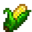
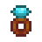
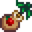
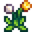
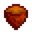
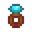
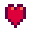
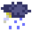

WEDDING
INVITATION









人生从此将展开新的一页。
……但前途必定是光明的！
新郎：陈志鹏
新娘：李晓敏
星期六 3日

上午 11:00 999999999999
999999999999
<<<< 欢迎来我们的婚礼 >>>>
婚礼时间：
2026年11月14日 · 星期六
上午 11:30 迎宾 · 12:00 婚宴开席
婚礼地点：
万达嘉华酒店
河北省承德市
今日所邂逅皆是生命中不同阶段重要的你们
婚礼短暂 · 情谊永存
婚礼短暂 · 情谊永存
tips：
若您参加婚礼，请提前告知，
我们会为您安排座位和酒店。
❤️ 陈志鹏 & 李晓敏 ❤️
2026 · 秋 · 承德 · STARDEW VALLEY
PELICAN TOWN · STARDEW VALLEY · YEAR 1